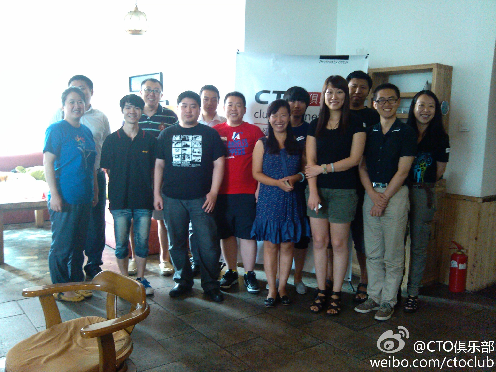

这次活动可以作为游戏系列的开始。[呵呵]@CTO俱乐部:最后我们收集了一些大家感兴趣的游戏类的话题，有人建议希望听到实践案例的分享，有人希望了解对中小型手游公司有哪些政策帮助，也有朋友愿意分享游戏开发的心得……，感谢大家的热情参与。 
#社区运营# 社区也是一种组织，社区运营实际上跟运作公司很类似，就是一群人协作完成某件事情，这个事情或者是个翻译项目，或者是个线下活动，或者是本书，或者是个软件产品。社区的不同在于，参与者出于兴趣，信仰，或者可能在其它处获得的利益而来，并且，社区对参与者没有强约束力。
#社区运营# 我一直觉得，社区这个概念适合解决公司和家庭所无法满足的需求，因此，公益组织，行业协会，社会化企业等更喜欢谈论社区。商业机构和公司，所谈论的社区，要么是属于售前的PR 和市场营销类，要么就属于售后的用户维系类。
#社区运营#对社区的投入中，重要程度由高到低，我是这么排列的：组织者的技能，组织者的资源（人脉，信誉等无形资产），参与者的时间，实物资源（宣传渠道，场地，礼品），和资金。如果把后两项看做是对社区最重要的投入，我会建议对方去直接开公司，不要玩社区。
#社区运营# 社区消散的原因有很多，其中一个原因是社区有了收入。凭兴趣聚集的社区，对未来的收入没有预期，也没有规划，核心人员的分工与贡献度也不明晰，突然有这么一笔现金摆在眼前，会生出许多故事来，人性使然。
#社区运营# 游戏社区属于娱乐性社区，规则设计和运营手段，会更多从人性本身考虑，花样可以有很多。而CSDN 这种面向职场和专业人士的社区，属功能性社区，在内容和运营手段上，都会有所限制。@CTO俱乐部:游戏里的激励基于对人性的了解，游戏规则的设计会从不同角度满足以下几类需求：社交互动，占有欲，炫耀心理和攀比心理。